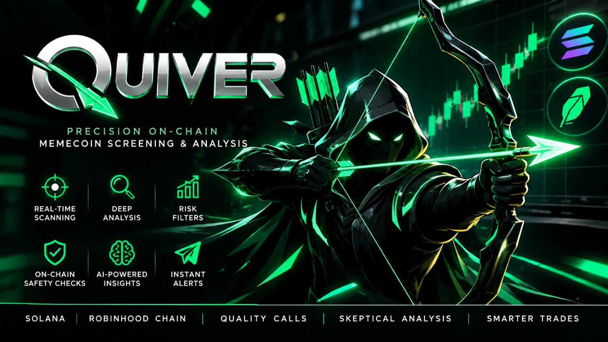

Quiver
A research-focused automated token scanner with explicit safety and data-quality checks.
← Back to research lab
What problem needs solving?
On-chain token streams are noisy, fast-moving, and susceptible to deceptive honeypots, malicious liquidity drainers, and unverified holder distributions. Discretionary traders struggle to filter real volume from manufactured wash trading without reliable, objective telemetry.
How the work is structured
Engineered an automated Telegram screening assistant using Python and blockchain RPC feeds. Implemented strict safety heuristics: inspecting contract code safety, tracing top-holder concentration ratios, validating liquidity pool lock durations, and scoring new token launches against predefined risk bounds.
What to show the reviewer
Sanitized Telegram output logs, documented filtering rules, and automated unit test cases evaluating boundary conditions. Live interface screenshots demonstrate command syntax and telemetry output; historical tokens shown serve as workflow demonstrations, not trading endorsements.
What comes next?
Expanding RPC latency optimizations, adding cross-chain screening for emerging EVM and SVM networks, and compiling false-positive / false-negative metric reports to refine alert thresholds.